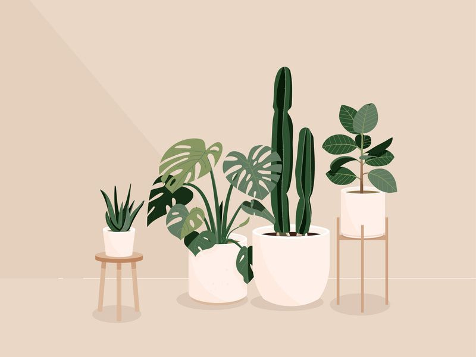

Welcome to this page this page will show the smallest plants to the largest plants!
This website can help you find what plant would be good for you and will show you how to take care of it

This is a wolffia plant the worlds smallest plant this can be used for smoothies and it is useful for healthy human nutrition
How to take care of a Wolffia plant.
1. Wolffia plant is an extremely nutrient-sensitive plant and has a limited number of essential nutrients. It will not be able to survive without a source of nitrogen, phosphorus, potassium, calcium, and iron. By far, nitrogen is its most critical requirement as it helps facilitate growth and reproduction.
2. Iron is important because it allows for efficient oxygen uptake which keeps your wolffia happy!
3. There’s more to caring for wolffia plant than simply putting it in a container of water.
4. They require full sun or partial shade (5-8 hours of direct sunlight)
5. The potting mix must be rich and fertile. Make sure that it is not too small in size as wolffia should have enough space to grow. The soil should also be wet most of the time, so make sure you choose soil that can hold lots of water.
6. Proper humidity is critical for wolffia growth. The optimal range of humidity varies, but 20-40% is recommended in most cases. This can be difficult to control indoors, so consider providing a humidifier if there isn’t already one in your home. If you don’t have a humidifier and live in an arid climate, place a few trays of moist pebbles on top of your containers; as they evaporate, they will increase relative humidity around your plants.

This is a Posidonia Plant, it mainly found in the mediterranean ocean, you can grow this is your garden, also you can eat this at home and is very healthy for your body.
How to take care of a Posidonia Plant or seagrass.
1. Potted plants need to be watered deeply infrequently. Allow for the pot to dry out between watering to a depth of several inches (8 cm.)
2. Every two years you will need to remove the plant, replace the soil mix, and divide the grass. Use a soil knife or sod saw to cut the roots and plant into two pieces. Pull or cut out the parts that are dying out and then replant each piece separately.
3. Posidonia Plant care for container gardens includes raking or pulling out the dead blades. Some grasses will die back in cold weather, which is signaled by all the blades becoming brown. You can leave them until late winter to early spring and then cut them back to a couple of inches (5 cm.) above the crown. Brand new blades will grow and fill in the plant as spring growth arrives.
4. What is the crown? The crown is where the stem and the root of the plant meet.
This is a Aloe vera plant it can help you in multiple ways, like when you have a sunburn, it could help you to stay hydrated in the summer. This plant can help you a lot and doesn't need a lot of maintenance. This is my favorite plant,and I would recommend getting this plant.
How to take care of a Aloe vera.
1. Place you plant in a good pot with a good drain, the pot should have 1-2 inch. diameter.
2. Your Aloe plant would have to be place indirect sunlight,but your aloe plant can get sunburned. If your plant gets sunburn it will have a white discoloration against the green leaves.
3. Aloe is very sensitive and would not be good around doors and around vents especially in the winter.
4. When watering make sure that you feel the soil and make sure that it is dry before watering again.
5. Aloe is a very slow growing plant and should be around 6-8 inches tall and 10 or more leaves on the plant, if you cut or remove a leaf it will not grow back.

This is a Peace lily plant, thies plant can help you in many ways. It can help you sleep and helps the air in your house be cleaner.
How to take care of a Peace lily plant.
1. Use a well-draining, all-purpose potting soil. The soil should be able to hold moisture and dry out slowly over time. Peace lilies don’t like to dry out entirely, but they also won’t do well if kept in soil that’s constantly wet, as this fosters root rot fungus.
2. Repotting the plant every few years in the spring is good for the peace lily, as it will appreciate the refreshed soil.
3. Eventually, the peace lily may grow too large for its pot, at which point it can be divided. Remove the plant from its pot and split it into smaller plants, being sure to leave several leaves per clump. Peace lilies grow from rhizomes, so it can tolerate a bit of tough treatment during dividing.
4. Ideally, keep peace lilies in a spot that gets bright, indirect light. An east-facing window is perfect, as the plant will be exposed to the bright morning sun. Keep peace lilies out of areas where they’ll get direct sunlight all day, as it may dry them out too much. A good plave would be a south or north facing window.
5. When it comes to watering, consistency is key. Keep the soil lightly moist to the touch, but not overly saturated. Peace lilies can tolerate short periods of dry soil, but their leaves will start to develop brown tips if they don’t have enough water or humidity. Peace lilies are sensitive to chemicals commonly found in tap water, such as fluoride, which may cause brown leaf tips. Use filtered, room-temperature water, if possible.
6. What is a rhizomes? a continuously growing horizontal underground stem which puts out lateral shoots and adventitious roots at intervals.
About me Hi, I am Lily Thies. I made this website to help people get to know plants and how to understand how to take care of them. I love plants and I love seeing them growing. I choose some plants that you dont hear about everyday, but they are very beauiful plants and can help you have a wonderful life. I have had a wonderful life, but I had a dairy allgery and that didn't make my bones strong, I had two broken arms, a knee injury, and a broken hand.Then I tryed aloevera and it helped me so much. aloe vera is one of the healthiest plants in the world. Thank you so much for reading my story and helping this website. I hope you have a plantawesome day.:)
Github